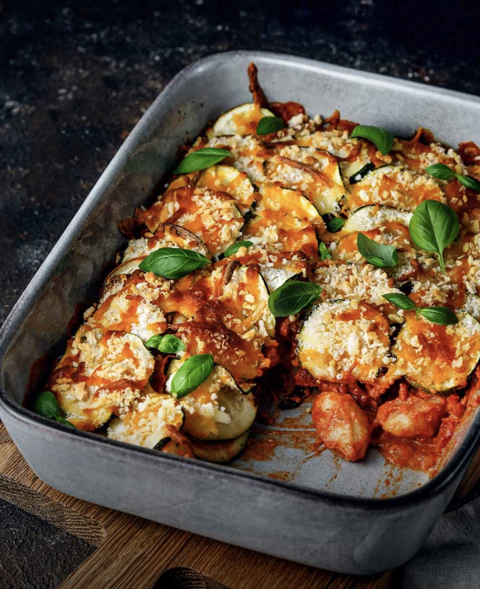

Gnocchi Courgette Casserole
(sounds weird but its awesome)

Description
The dish i dreamt of for a long time!
Ingredients
To give four portions you will need
- 2 Onions
- 2 Courgettes
- 30g Basil
- 100g Mascapone
- 120g Cheese, grated
- 600g Gnocchi
- 800g Tomatoes, hacked
- 300g roasted Peppers, from a glass
- 30g Tomatoe paste
- 50g Breadcrums
- 2 Tb Olive oil
- 2 Tb Red Wine vinegar
- 4 Cloves of Garlic
- Salt
- Pepper
Steps to success
- Heat oven to 180 degrees celsius
- Cut courgette in small slices
- Cut Onion in small cubes
- Heat onions in a Pot with the oilve oil
- Cut the garlic
- Cut the Pepper
- Cut the Basil
- Add garlic and peppe to the pot
- Add Tomatoes, vinegar, basil and pepper to the pot. Spice with some salt an pepper
- Cook gnocchis
- Mix the gnocchis and the tomato sauce
- Put the micxture into a baking dish and add courgete on top
- Bake for 15 min
- When finished add some basil on top
- Enjoy! :)